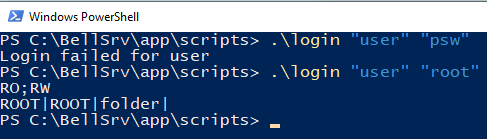
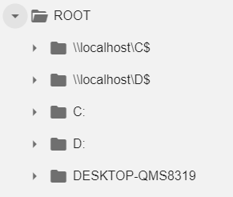
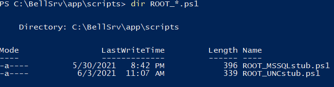
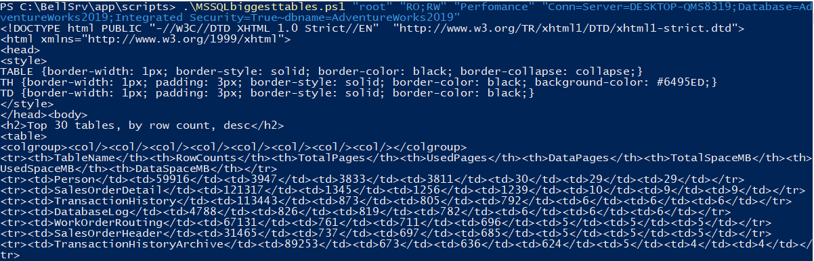
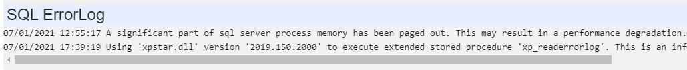

Coding your own Module
Bell scripts are placed in the same directory on the root level. In the examples below we use ext for an extension of a script, for Powershell it is ps1 (and in the examples below, we use Powershell scripts as examples, but Python files (.py) can be also used and even mixed with .ps1 files). There are 2 required scripts: login.ext, audit.ext, all other scripts are optional.
login.ext processes the login request:
The login logic is completely encapsulated inside the script. It can use predefined hard-coded logins, it can have it's own database or users/logins, or, which is better, it can use Active Directory. The framework is unaware of what method is used.

When login is successful (second example), the script should output 2 lines. The first line is semicolon-separated list of security "groups". That list is passed to every other script, so any script can decide if an operation should be denied or not.
You can put AD group names as is, but usually such group names are long and might change, so it makes sense to 'translate' them with some short names. In the example above AD groups are translated into "RO" (those who can read everything), and "RW" (those who can do more dangerous things. Download any module to check the example with AD.
The second line in the cortege for the root element. Corteges are explained below, they are used to define tree's contents.
A cortege consists of 4 |-separated fields: name, which is a name you can see in GUI, element class, element type, and tags.


In this example there are 2 scripts, but quite often there is just one. Why do we need more than one script? This is useful because you can 'plug' additional functionality to an existing module, you can add tree elements (properties) without modifying the existing script. All you need to know is the class name. What happens if we run the script?
All scripts have 4 parameters: user, group (list of groups created once for the session by login.ext), name of the caller element and tags.
So we can see that both scripts had returned the corteges. Name is displayed in a tree, class in used to identify, what script(s)
to run. Type defines a type of element: folder for a tree, and leaves elements are text, html, file and chart.
Tags are used to pass the context from one script to another. Tags typically are key=value pairs, where multiple key=values are separated with ~.
Values can contain a sign '=', the first = is interpreted as key/value separator, while all successive equal signs are interpreted
as parts of the value. Sometimes tags contain passwords, it is recommended to write them in the following format: ###secretname###,
and the value for the secret is stored in config.js file and is not sent to a client (and can not be debugged using F12-console)
When a 'leaf' element is executed, the bell framework searches for the script called

Note how context is passed thru tags. Formatting to HTML is easily achieved in Powershell. lets check how that script works step by step.
param ([string]$usr, [string]$grp, [string]$name, [string]$tags)
. $PSScriptRoot/MSSQLquery.ps1
parse $tags
$conn = $tagval.Conn
$dbname = $tagval.dbname
In the beginning, we add the common MSSQL module. Function 'parse' parses tags into a hash table $tagval. Demo SQL module doesn't have any security, so $grp is ignored. Next, we populate $Header as the table header and $q as the SQL query to get the biggest tables. Finally, we do:
'text' scripts return plain text as is:
$d = MSSQLquery $conn $q | Select-Object -Property * -ExcludeProperty "ItemArray", "RowError", "RowState", "Table", "HasErrors"
$d | ConvertTo-HTML -Title "Rows" -Head $Header -body '<h2>Top 30 tables, by row count, desc</h2>'

And finally, 'chart' returns chart data in the following format:
Line 1 - chart type: word 'Line' or 'Bar', optionally followed by ,'startAtzero' - this fixed Ymin=0
Line 2 - title
Line 3 - X axis name
Line 4 - Y axis name
Line 5 - Column names, comma separated.
Next - values, comma separated. Values must be int or float, first column 'must' be datetime (format with 'T'), scale is auto-calculated.
Code sample (query is in $q):
@"
Line
Instant SQL server cpu for the last seconds
X - time
Y - CPU pct
"@
MSSQLchart $conn $q
audit.'ext' is executed after every operation. Bell framework passes the following information to a script:
all 4 parameters, like for any other script, followed by status code (0 - success). Audit script must be present,
it can be empty if you don't need it. Typically, it logs all information into a file or a database.
You can find working examples in the modules.
Finally, you can force download of a file (useful for the bug files). Specify type='file'. Script should output full path to a file
Update v0.70:
You can override the default order of elements in a folder (which is names alphabetically, case-insensitive)
by providing a numeric priority. Priority is a number from 0 to 99999 appended to a name after ';' sign.
Default priority is 100. In a simple scenario, to put an element on top, append ;1 to a name.
If you provide a priority to all elements you can force any order you want.
Elements with the same priority are ordered as before.
Update v0.71:
Script can generate images and save them to the current default directory.
Current directory is cleaned every time before running a script.
Different workers have different working directories so collisions are avoided.
Update v0.72:
Secrets in tags (###) are resolved using the config.js, but if not found
there server executes script secret.ps1 or secret.py (in a scripts directory).
This script gets secret name in the 1st parameter and should return the value using Write-Host or print.
All errors, raised by this script are handled and logged.